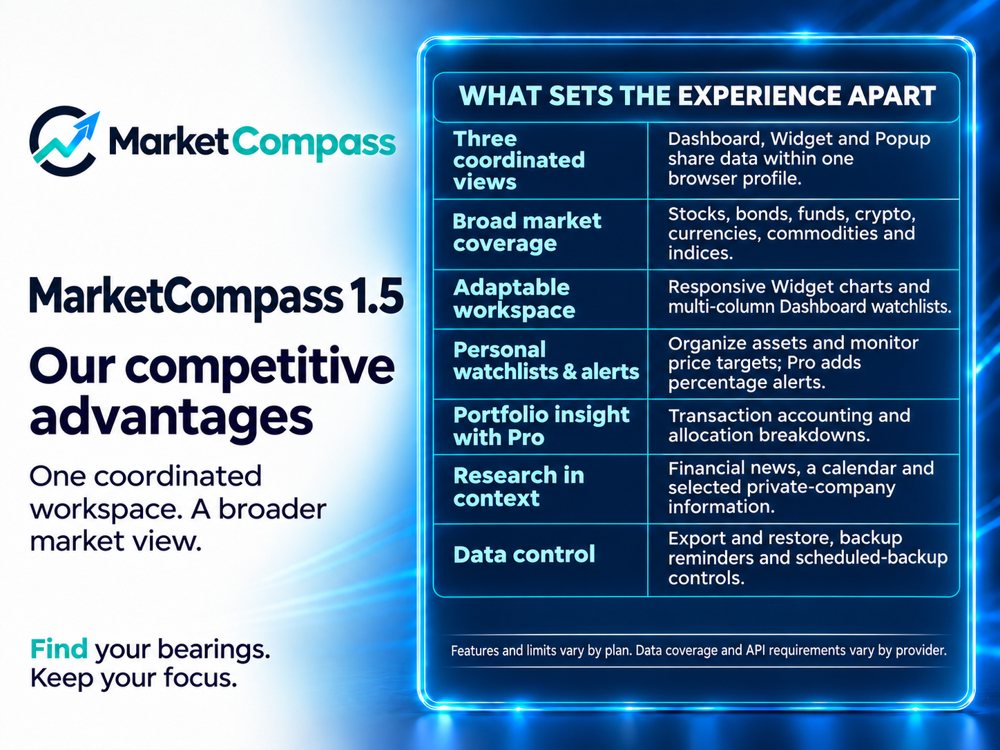

More than your holdings
Navigate stocks, bonds, ETFs, mutual funds, currencies, commodities, crypto and global indices, alongside selected private-company information, news and a calendar.
Choose MarketCompass
See the broader market, keep key assets in view, and organize your own watchlists and portfolios without leaving your browser workspace.
Navigate stocks, bonds, ETFs, mutual funds, currencies, commodities, crypto and global indices, alongside selected private-company information, news and a calendar.
Explore the full Dashboard, keep a separate Widget nearby, or check the toolbar Popup. All three share data within the same browser profile.
Build watchlists, set alerts and maintain portfolio records manually. Pro expands capacity and adds transaction accounting and allocation breakdowns.
Choose how much detail you need. These are complementary views of one workspace, not separate accounts.
Watchlists and records are shared in one browser profile, not automatically synchronized across devices. See the full product tour.
Built for your market perspective
One coordinated workspace. A broader market view. MarketCompass combines market monitoring, personal organization and three complementary browser views.
Version 1.5 update: submitted for review in the Chrome Web Store and Microsoft Edge Add-ons. The store links currently provide the published release; version 1.5 will be available after approval and publication.

This is MarketCompass’s distinguishing combination of capabilities, not a claim that each feature is exclusive. Features and limits vary by plan. Data coverage and API requirements vary by provider. MarketCompass is a monitoring companion, not a replacement for advanced charting, exhaustive research or brokerage trading.
Free, or Pro for $4.99/month or $49/year. Annual billing saves $10.88 (about 18%) compared with 12 monthly payments.
USD base prices. Confirm taxes, renewal and cancellation terms in the hosted checkout. Upgrade from Settings & Sources → Plan & Usage in the extension.
Compare Free & ProSome features require your own provider API keys. Data availability, timing and historical coverage vary; Pro does not make every feed real-time or include provider subscriptions.
MarketCompass does not connect to a brokerage, execute trades or prepare tax filings. Portfolio accounting uses average cost.
Read the API setup guide →Portfolio records and preferences are stored locally in your browser profile. Data requests, license verification and hosted checkout use external providers. MarketCompass does not collect general browsing history or product analytics.
Read the Privacy Policy →